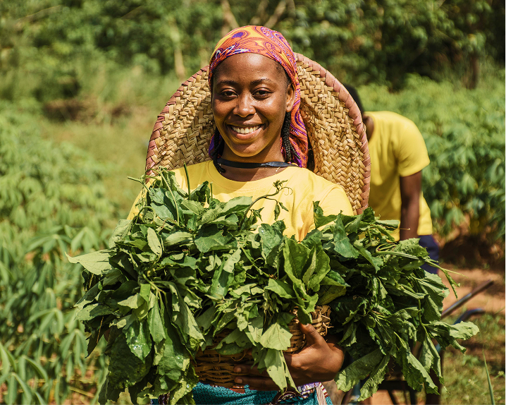

Powering verified trade for 500+ Farmers and 50+ Global Buyers
Revolutionizing Global Agriculture
Eliminating middlemen to ensure fair pricing for farmers and guaranteed integrity for international buyers.



500+
Active Farmers
1000+
Products Listed
1000+
Buyers
99.2%
Success Rate
Breaking the Cycle of Inefficiency
Traditional supply chains are opaque, costing farmers and buyers up to 40% in lost revenue.
For Farmers
No more price exploitation by middlemen. Get direct access to high-value markets.
For Buyers
End the risk of inconsistent quality and fraud. Access source-verified produce with a click.
Built on Trust and Verification
Digital Passport (Traceability)
Every listing is tied to a unique Lot/Batch ID, ensuring you know exactly where your food comes from.
Mandatory KYC
We set the gold standard by verifying every farm's location via GPS and official documentation.
Direct RFQ System
Initiate transactions through a formal Request for Quote process with immutable audit trails.
Mobile-First Design
Optimized for easy use by farmers in the field and procurement managers in the office.
How It Works
Get Verified
Submit your KYC documents for Admin approval to join our trusted network.
List Or Discover
Farmers create detailed listings with harvest dates; buyers use advanced filters to find the perfect match.
Negotiate & Quote
Buyers submit RFQs directly to farmers to settle on quantity and price.
Secure The Deal
Once accepted, the system generates a professional Order Confirmation with a traceability snapshot.
Ready to revolutionize your agricultural supply chain?
Join the most efficient B2B marketplace for agro-allied manufacturers and international exporters.